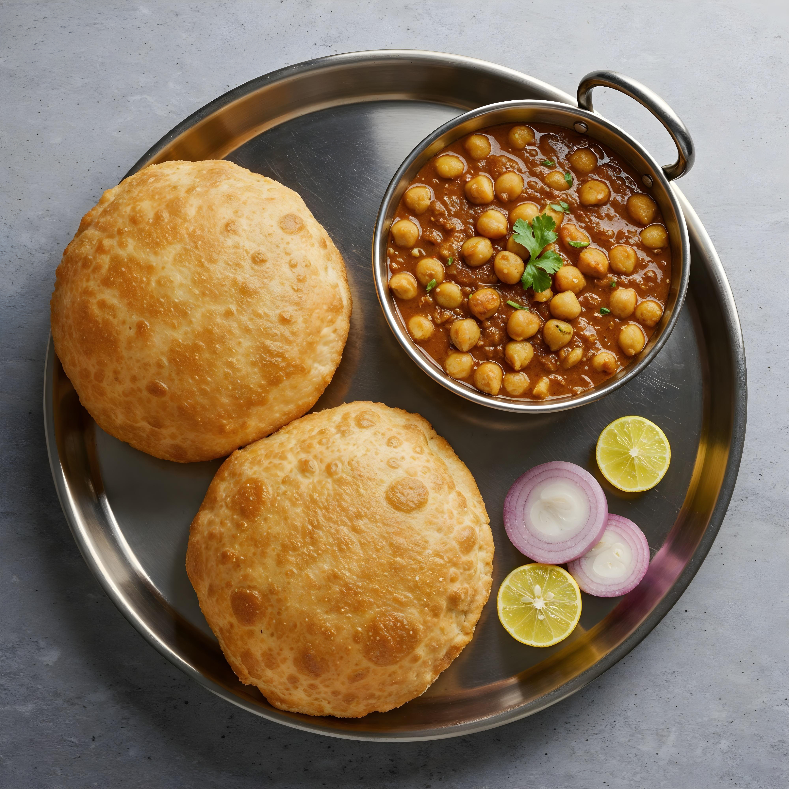

Home
Chole Bhature Recipe

Description
Chole Bhature is a popular North Indian dish made with spicy chickpea curry
called chole and deep-fried bread known as bhature.
This dish is widely enjoyed as a hearty breakfast or lunch and is famous
for its rich flavors and satisfying taste.
Ingredients for Chole Bhature
- 2 cups chickpeas (soaked overnight)
- 2 onions (finely chopped)
- 2 tomatoes (chopped)
- 2 tablespoons ginger-garlic paste
- 1 teaspoon turmeric powder
- 1 teaspoon red chili powder
- 1 teaspoon garam masala
- 1 teaspoon cumin seeds
- Salt to taste
- Fresh coriander leaves
- 2 cups all-purpose flour (for bhature)
- 1/2 cup yogurt
- Cooking oil for frying
Steps to Make Chole Bhature
- Pressure cook soaked chickpeas until soft.
- Heat oil in a pan and add cumin seeds.
- Add chopped onions and cook until golden brown.
- Add ginger-garlic paste and cook for a minute.
- Add tomatoes and cook until soft.
- Add spices and salt, then mix well.
- Add the cooked chickpeas and simmer for 10 minutes.
- Prepare dough using flour, yogurt, and water.
- Roll the dough into small circles.
- Deep fry the bhature until golden and serve with chole.